A Prosecuting Authority (or a law firm authorised by a prosecuting authority) can create, print and lodge the following types of Prosecution Notice in the eCourts Portal:
- Prosecution Notice with Bail Granted or Refused – Magistrates Court and Children’s Court
- Prosecution Notice with a Court Hearing Notice – Magistrates Court only
- Prosecution Notice with a Summons – Magistrates Court and Children’s Court
- Prosecution Notice – Notice to Attend Court – Children’s Court only
01. Open eCourts Home page. Log in using your user name (email) and password.
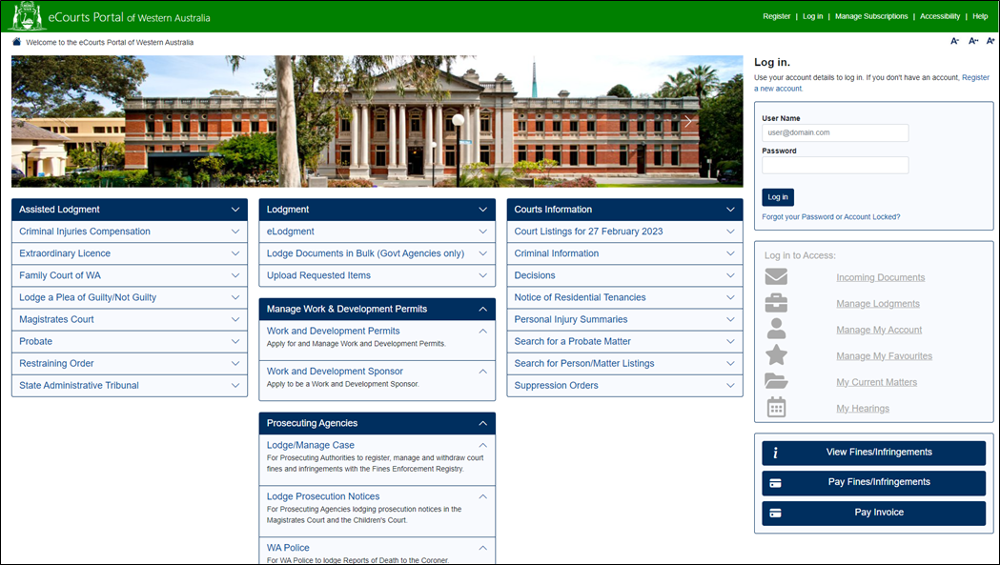
02. If the user is associated to multiple agencies then the Select Organisation screen will appear. From the drop-down, select the appropriate prosecuting agency, that the prosecuting notice you wish to work on, is related to. Click Select.
Note: If the user is only associated to a single prosecuting agency, the prosecuting agency will default automatically and this screen won’t appear.
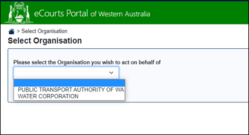
03. Navigate to the Prosecuting Agencies section and select Lodge Prosecution Notices.
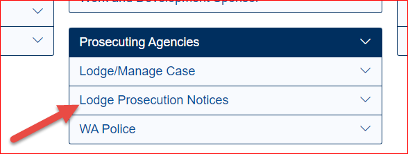
04. The Prosecution Notice and Accused Details page opens.
Note: The Prosecuting Agency field automatically defaults to the agency that the logged in user is associated with (or the one that was selected in the Select Organisation screen if the user is associated to multiple agencies – see step 2).
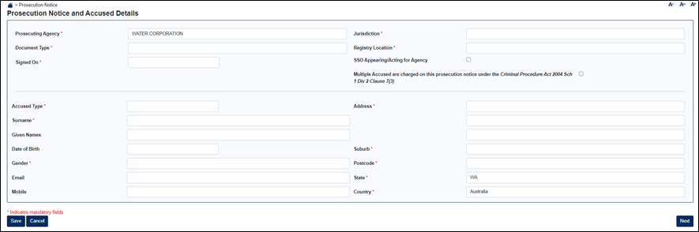
05. Enter the required details for each field. If the field has a red asterix *, this indicates it is mandatory and must be entered.
Select the Prosecution Notice requirements:
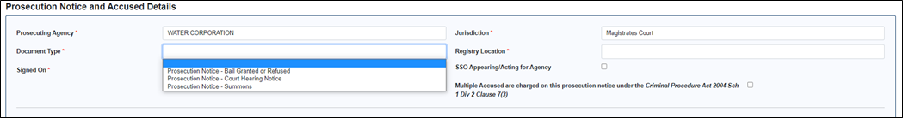
- Jurisdiction – Magistrates or Children’s Court
Note: When you select the jurisdiction, the Document Types available for that jurisdiction will display.
- Document Type – Select the type of prosecution to create
Note: Additional fields may display based on the Document Type selected
- Registry Location – Select the court location where the matter is to be heard.
- Signed On – Enter todays date, or the date the Prosecution Notice was been signed (if already issued manually).
- SSO Appearing/Acting for Agency – Check box if applicable.
- Multiple Accused – Check box if more than one Accused is to be added to the Prosecution Notice
06. Enter the Accused Details for an Individual or an Organisation. If the field has a red asterix *, this indicates it is mandatory and must be entered.
Note: The Accused Type of Organisation is not available for a Prosecution Notice – Bail Granted or Refused.
Individual
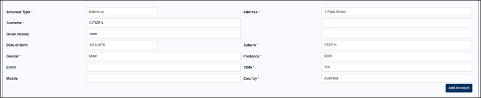
Organisation
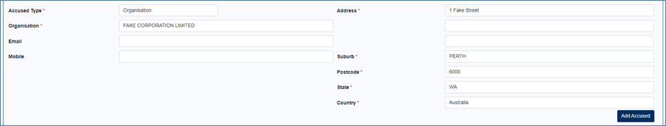
- Accused Type – Select the type of accused
- Surname – Enter the surname of the accused (Individual only)
- Organisation – Enter the full organisation name of the accused (Organisation only)
- Given Names – Enter the given names of the accused (Individual only)
- Date of Birth – Enter the date of birth of the accused (Individual only)
- Gender – Enter the gender of the accused (Individual only)
- Email - Enter the email of the accused if known
- Mobile - Enter the mobile of the accused if known
- Address – Enter the number and street address
- Suburb – Enter the suburb
- Postcode – Populates automatically based on the suburb entered.
- State – Defaults to WA upon opening the page.
- Country – Defaults to Australia upon opening the page.
07. Add the accused to the prosecution notice by selecting the Add Accused button. Repeat for every accused on the prosecution notice.
Note: Where a single accused exists on a prosecution notice, the accused is added automatically, and no table displays.
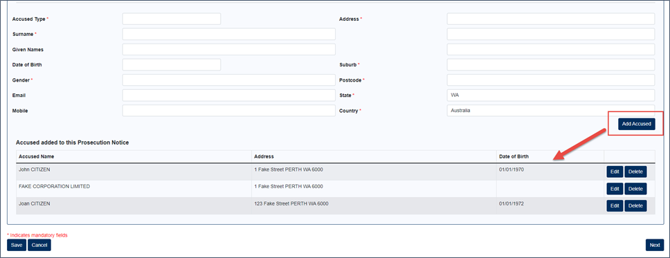
07a. Notice to Attend Court only – you are required to record the responsible adult, if known.
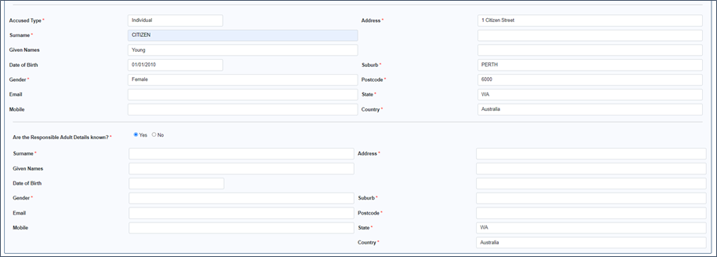
08. Once all Accused have been added, select Next.
The Charges page is displayed. This is where each charge is created and applied to an accused(s). If the field has a red asterix *, this indicates it is mandatory and must be entered.
09. Enter the details of the charge.
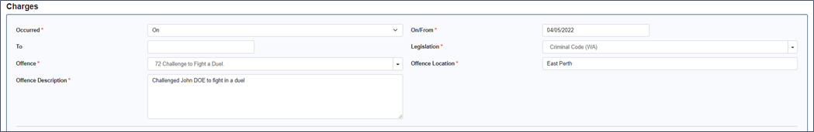
- Occurred – Select an option from the dropdown box (mandatory field)
- On/From – Enter the date of the offence or enter the start date of the offence (mandatory field)
- To – Enter the end date of the offence
- Legislation – Type in the first few letters of the legislation to filter (mandatory field)
- Offence – Select the applicable offence description. This field filters based on the legislation selected (mandatory field)
- Offence Location – Enter the location (suburb) where the offence occurred (mandatory field)
- Offence Description – Enter a description of the offence (mandatory field). The character limit is 20,000
Note: If the required Legislation or Offence is not displayed, then save your prosecution notice as is. Then add the details of the legislation/offence to a spread sheet with the details shown in the below table and email the completed spread sheet to CTGHelpdesk@justice.wa.gov.au. They will let you know when the new item(s) has been added, after which you will be able to get back into the Portal and complete the prosecution notice.
|
Visible |
OT Section |
OT Subsection |
OT Add Code |
Eff From |
Eff To |
Statute of Limitation (Months) |
Comment |
10. To enter the Victim Details (if applicable), select the Enter Victim Details checkbox.
The Victim fields display.
11. Select the Victim Type – Individual or Organisation. Enter the victim details.
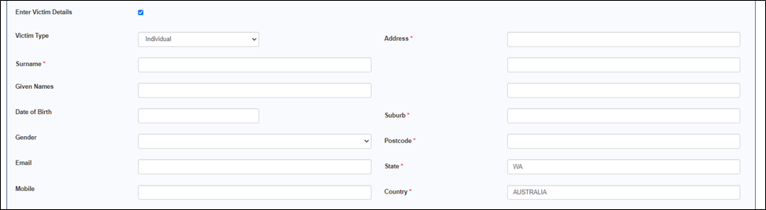
12. Select the Apply Charge to Selected Accused checkbox next to each accused the charge should be applied to
Note: Where a single accused exists on a prosecution notice, the accused is selected automatically
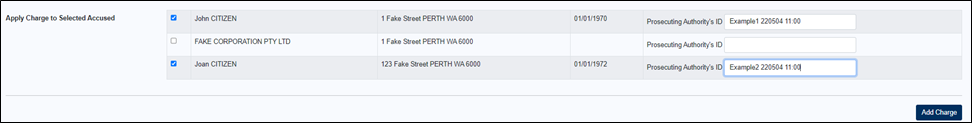
13. Enter a Prosecuting Authority’s ID (PA ID) for each accused the charge is being applied to.
The Prosecuting Authority’s ID is a unique reference number required for each charge that can be used to identify the charge when the charge number isn’t known. The PA ID can contain letters, numbers and characters, and displays on a Prosecution Notice printed from the eCourts Portal for service on the Accused.
14. Select Add Charge.
The charge is added to the prosecution notice and each charge displays in a table of charges at the bottom of the page.
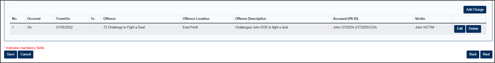
15. Repeat steps 09 to 14 to add more charges to the prosecution notice.
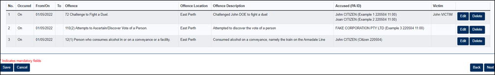
Any Charge can be amended or removed by selecting the Edit or Delete button on the charge table
16. Select Next.
The Hearing Details page opens.
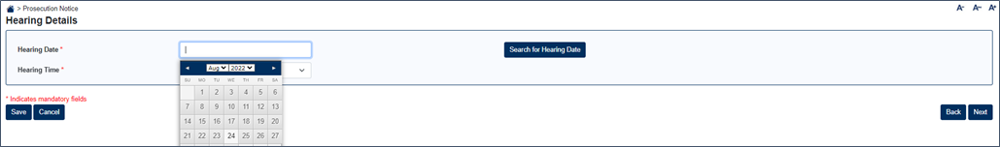
17. Hearing Date – Enter a date to list the prosecution notice (mandatory field)
18. Search for Hearing Date – Select Search for Hearing Date.
Note: If the selected date is not available, enter a new date or contact the court. If attempting to list a Prosecution Notice with Bail Refused to a same-day hearing, an automated cut-off time applies.
19. Hearing Time – Select an available time (mandatory field).
Note: The time is determined by a confirmed hearing date search.
20. Select Next.
The Attachment screen appears.
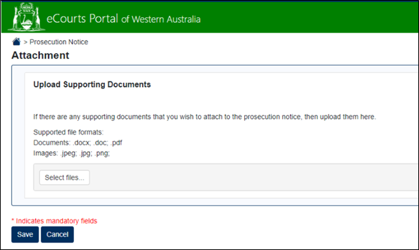
21. If required upload any supporting documents. It is not mandatory to upload anything here.
22. Select Next.
The Service and Agency Officer Details page opens.
The Issuing Officer’s details automatically display as the logged in user. These details replace a manual signature. If you are not an issuing officer for this prosecuting agency then these will be blank, and means that you are not authorised to lodge the prosecution notice. See step 26 for more information about lodging a PN.
Note: The Issuing Officer shown here will display on the generated Prosecution Notice and on the lodged Prosecution Notice.
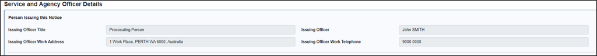
23. Select Print Prosecution Notice (if applicable).
The prosecution notice will download as a PDF. It can be printed and served on the accused.
For multiple accused, a separate prosecution notice will be generated for each accused.
Note: Service details do not need to be completed to print a prosecution notice.
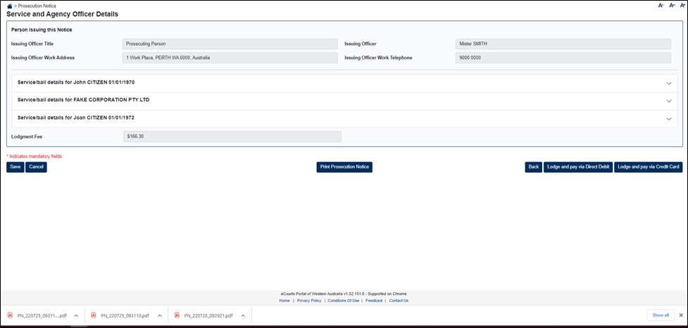
24. Complete the service details for each accused.
Service Details are mandatory and must be completed for each accused before lodgment.
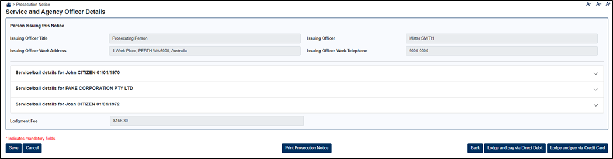
25a. For a Prosecution Notice with Bail Granted, the signed Bail Undertaking must be uploaded, including any surety or responsible adult paperwork.
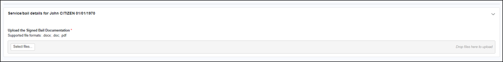
- Upload or “Drag and Drop” documents.
- Single or multiple uploads are permitted.
25b. For a Prosecution Notice with Bail Refused, no service or upload is required.
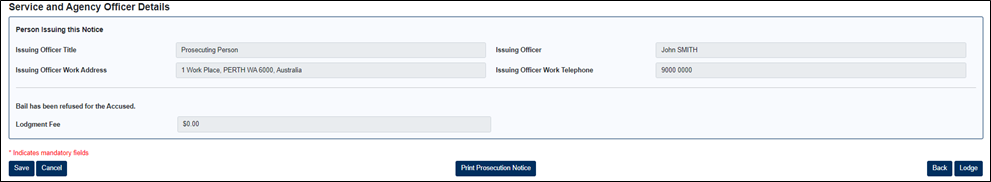
25c. For a Court Hearing Notice, Summons or Notice to Attend Court, service details must be entered. If the field has a red asterix *, this indicates it is mandatory and must be entered.
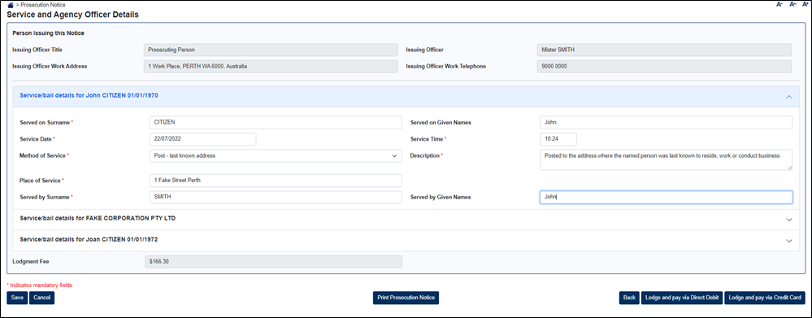
25d. For a Notice to Attend Court, the user must also indicate service on a responsible adult, in addition to the accused.
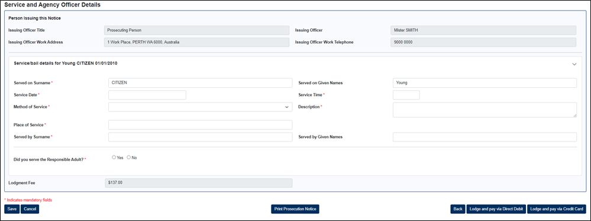
26. An electronic Service Certificate is created from the service details entered for a Court Hearing Notice, Summons or Notice to Attend Court. The physical Service Certificate should still be completed by the serving officer and retained by the prosecuting agency for production in Court, if required by the Judicial Officer.
27. If you an authorised issuing officer for the prosecuting agency, and the agency is not required to pay a lodgement fee, then select the Lodge button.
A confirmation message displays for a successful lodgment. The charge numbers will be emailed to the eCourts Notification email recorded for the Prosecuting Agency, and to your own email address that’s registered with the Portal.
Note: If you are not an authorised issuing officer for the agency then you will not be able to lodge the PN. You will need to save the PN, then contact the person who is an issuing offider. Ask them to log in, find the PN in the Manage Lodgments screen, click Resume (see steps 29-30) and then lodge the PN.
28. If you an authorised issuing officer for the prosecuting agency, and the agency is required to pay a lodgement fee, then payment can be made via Direct Debit or Credit Card.
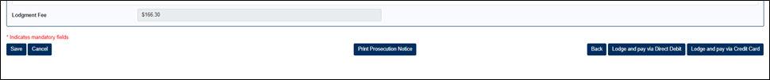
29a. Select Lodge and pay via Direct Debit.
Note: This button will only appear if your organisation has a DD account set-up with the eCourts Portal.
A confirmation message displays for a successful lodgment. The invoice and charge numbers will be emailed to the eCourts Notification email recorded for the Prosecuting Agency, and to your own email address that’s registered with the Portal.
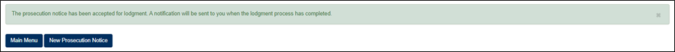
Note: If you are not an authorised issuing officer for the agency then you will not be able to lodge the PN. You will need to save the PN, then contact the person who is an issuing offider. Ask them to log in, find the PN in the Manage Lodgments screen, click Resume (see steps 29-30) and then lodge the PN.
29b. Select Lodge and pay via Credit Card.
The Payment Details screen opens.
30. Enter the credit card Details.
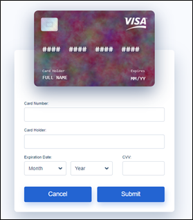
31. Select Submit.
A confirmation message displays for a successful lodgment.
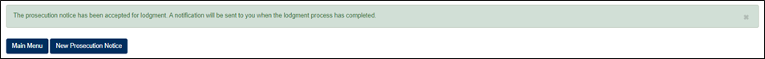
The invoice and charge numbers will be emailed to the eCourts Notification email recorded for the Prosecuting Agency, and to your own email address that’s registered with the Portal.
Note: If you are not an authorised issuing officer for the agency then you will not be able to lodge the PN. You will need to save the PN, then contact the person who is an issuing officer. Ask them to log in, find the PN in the Manage Lodgments screen, click Resume (see steps 29-30) and then lodge the PN.
32. To save a lodgment at any time, select Save.
Note: All mandatory fields must be completed on the current page before it can be saved
33. To open or recommence a saved lodgment, after logging in, select the Manage Lodgments link. The red number indicates the number of saved incomplete lodgments for the selected prosecuting agency.
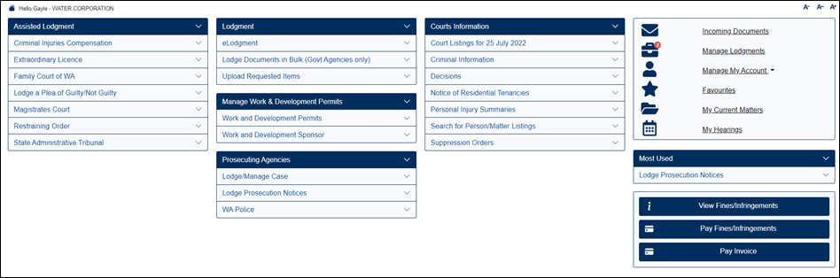
34. Select Resume to return to the last completed page of a lodgment.
35. Select Delete to delete a Prosecution Notice.
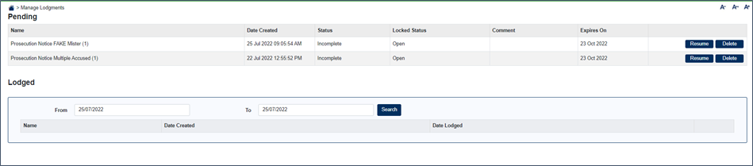
36. To view a list of lodged prosecution notices for the prosecuting agency, enter the date search range and select Search.
Note: The details of a prosecution notice are not able to be viewed after lodgment.
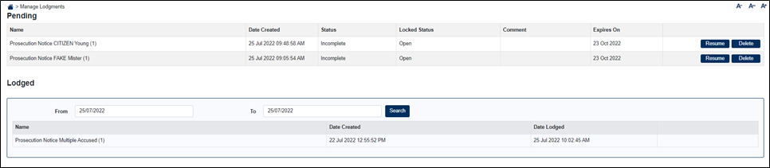